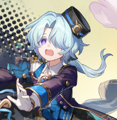

| 角色 | 姓名 | 简介 | 视频链接 |
|---|---|---|---|
| 知更鸟 | 出生于匹诺康尼，闻名银河的天坏族歌者，举止从容优雅的 少女。 此次受家族宴请回到故乡，在「谐乐大典」为众宾献歌 曲。 可以依靠「同谐」的力量传递歌声，在歌迷乃至万界生灵之中展现「共鸣」 | 前往->MV | |
|  | 米沙 | 乖巧懂事的「白日梦酒店」门童，梦想成为一名和爷爷一样的银河冒险家。 工作十分努力，尤其擅长修理各类机械，热衷于酒店住客分亨的星际见闻。 希望自己快快长大，期待着早日有一天踏上探索群星的旅程。 | 前往->MV |
| 加拉赫 | 匹诺康尼猎犬家系的治安官，也是一位不修边幅、懒散随性的调饮师。 着装颇为散漫，调饮更是随意，对来访宾客以礼相待，但保有戒心。 似乎有着诸多往事，却从不主动提及。 | 前往->MV |
匹诺康尼位于阿斯德纳星系的盛会之星，梦想之地。匹诺康尼是高悬在深黯星空中之上的奢丽酒店，也是星际名流觥筹交错，万邦豪客们一掷千金 的度假胜地。 人们来此寻找深埋心中、长久渴求的梦，通过酒店的入梦池踏入实现一切梦想的美梦国度。
极少会有客人关注匹诺康尼沉重的历史：千年以前，这里曾是公司建造的边陲监狱。被流放的罪人们历经迢迢苦旅，抵达此处，被强加一项危险的 使命：修补忆质在现 实星系中的泄口。在频繁暴露于忆质的劳作中，这些犯人意识到自己渐渐踏入一处奇妙的共有梦境，在其中他们寻得一个共 同的梦想——「自由」。
万界之癌爆发后，边陲监狱的归属发生易主。与这场抗争相关的史料极为稀缺，且内容令人生疑。但有的记载明确指出，在悲悼伶人、 假面愚者、无名客、厄兆先锋等一众派系的帮助下，囚犯们成了这片新生国度的主人。在此后的流放之地时期，不谐的杂音间或传出。 直到「家族」降临并接管梦境，匹诺康尼终于经历了爆发式的繁荣，成为蜚声银河的度假胜地。
随着2.2主线的落幕，我们从几位主要角色口中听到了诸多匹诺康尼的秘辛，结合这几个版本的各类任务及文字资料，逐步对匹诺康尼的过去 及现状有了了解，但同时由于谜语人的存在，我们依旧无法得知到底是谁动了星核（说的就是你星期日，你倒是把话说完啊），所以我们只能从 一些现有资料中去推测2.3可能出现的幕后黑手 首先梳理一下匹诺康尼建立的时间线，材料主要源自2.2活动《美梦往事》：
1、战争年代。
主要有三次战争。
第一次战争是以哈努努为首的囚徒们趁着纳某人乱丢垃圾导致宇宙大乱的时节，联合公司内部人员揭竿而起，打破牢笼。
第二次战争是列车行至此处，米哈伊尔等三人决定留下帮助哈努努，并开始收集伙伴，击退公司大BOSS。
第二次战争期间由于血统、理念、职责等原因，逐渐产生各个家系（或者说其前身），分别是负责战争的猎犬(推测以哈努努为首)，负责开拓的灯蛾(确认家主凯勒贝克，他与他的家系被铁尔南称赞比米哈伊尔还懂[开拓])，负责筑梦的隐夜鸫(确认以格拉克斯教授为首)，负责抵御忆质侵蚀的黑布林(推测为记忆或者神秘命途，加拉赫本体可能就是这家的遗孤)，负责宣传的鸢尾花(大概)，负责搞钱的苜蓿草(家主拉契卡，初代二鬼子)。
第三次战争先是公司派舰队进攻，哈努努中计陷入敌阵，将计就计引爆主舰弹药库，与敌同归于尽，匹诺康尼群龙无首，推测猎犬家系从这里开始逐渐沦为附庸；后二鬼子苜蓿草家主偷袭，黑布林家系灭亡，米哈伊尔在探查过程中得到黑布林的“种子”，苜蓿草“父辞子笑”权力交接；公司围困与忆质肆虐，使得匹诺康尼差点团灭，米哈伊尔于危难中接过领导权。
第二、三次战争部分内容源自《小小哈努行动》。
这里与童谣产生了出入，即橡木家系是战争后加入的，而不是最初就在，推测可能是黑布林同系（毕竟果子长在树上嘛）。
2、拓荒年代。
仗打没打完，家却快没了，开始有人打起星核的主意，但遭到无名客为首的阵营反对。
忆质肆虐，拉扎莉娜为了解忆质流向深入忆域，失踪(其研究成果帮助众人稳定忆域)。
主航道没了，铁尔南跟随灯蛾家系开拓航路，遭遇虫灾，灯蛾家系灭亡，铁尔南被巡海游侠所救，战死于绝灭大君[诛罗]的战役。
米哈伊尔冒险再次外出开拓，从而引来了同谐[家族]的协助，推测条件是匹诺康尼的各大家系并入[家族]。
在米哈伊尔外出期间，匹诺康尼内部趁着无名客阵营无人，偷偷使用星核，导致星核侵入梦境。
依靠家族“恰好”拥有的星核封印技术，匹诺康尼摆脱了忆质肆虐，并以同谐名义让公司无法再用强硬手段对付匹诺康尼，和平终于降临。
家族接手初期，隐夜鸫家系因反对加入家族而被打压，设计十二时刻的五大弟子背上污名，或死或逃或失踪，格拉克斯教授无奈退位，大弟子低头加入家族，以换取折纸大学的独立权。(资料源自湛蓝爵士支线任务)。
一切完成后米哈伊尔隐于幕后，匹诺康尼主事人正式成为以橡木家系为首的家族。
3、逐梦年代。
在米哈伊尔的建议下，匹诺康尼被打造成盛会之星逐渐繁荣，宇宙各地的逐梦客来到这里，随之而来的是越来越高的管理难度，橡木家主歌斐木因经历过诸多事情、原本就有此类思想或者星核蛊惑，认为只有[秩序]才能带来和平与繁荣，开始实施太一复活计划。
而米哈伊尔在与家族度过一段蜜月期后，发现星核问题并没有解决，但此时光靠自己已经无法动摇橡木家系对匹诺康尼的掌控，加之米哈伊尔时日无多，只能留下后手——钟表匠的遗产，将希望寄托于未来。
终于，在新一届谐乐大典召开前夕，加拉赫向各个阵营发去请柬，列车到来，故事进入2.0主线。
通过历史梳理和剧情对话可以知道，激活星核的人应该是匹诺康尼原家系的人，而且是米哈伊尔的对手。
其中橡木家主否认，星期日也因此推测出真相(但被断章了，他宝了个贝的)。
猎犬家系就是个附庸。
鸢尾花家主就现在的剧情而言人设是嘴硬心软，还跟钟表匠关系友好。
隐夜鸫是我最初怀疑的对象，因为他们有能力操纵梦境，但湛蓝爵士任务让我动摇了。(又是一把刀子啾)
于是嫌疑最大的就是曾经的二鬼子，现在的资本家，苜蓿草家系，在失去橡木家系之后，匹诺康尼家族最大势力无疑就是管钱的苜蓿草，且看他们届时会不会作妖。
就现在的剧情结合2.3落地的流萤和翡翠，主要剧情估计会围绕公司收回匹诺康尼所有权以及星核归属权的问题展开，希望到时能把之前的坑填一填吧，后面可能会来点轻松点的剧情，毕竟大预言家三月七说了